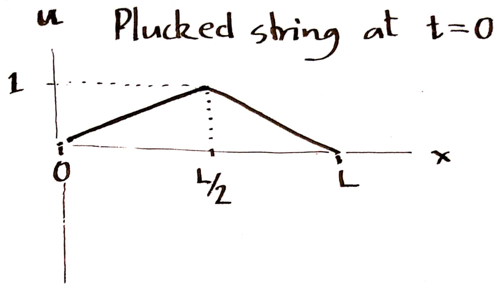
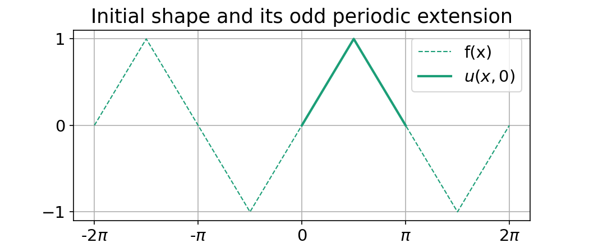

This is the first part of a series on how to use the matplotlib.animation module to create animated plots. The examples here show how to visualize traveling waves and the phenomenon of superposition.
Introduction
matplotlib1 is a python library for creating high quality scientific plots. It contains a module matplotlib.animation that can be used to create animations. This post shows examples of using this module to visualize wave motion.
Background
This is a short technical background on wave motion that explains the ideas behind the code examples below
Wave equation
Mathematically, wave motion is described by a partial differential equation called the wave equation. A 1-D version of the wave equation has the following form:
$$ \frac{\partial^2 u}{\partial t^2} = c^2 \frac{\partial^2 u}{\partial x^2} $$
where $u(x, t)$ is the solution for some given initial conditions - usually the initial position $u(x, 0)$ and initial velocity $\partial u / \partial t (x, 0)$ of the system.
The examples below simulate the solution to the wave equation for a plucked string of length $L$ that is anchored at two ends. At time 0, the string is pulled in the middle to create an inverted v-shape, and then let go. The solution $u(x, t)$ is the vertical position of the string at subsequent times. The initial position of the string is the piecewise function:
$$u(x, 0) = \begin{cases}
\frac{x}{L/2} & \text{for } 0 \leq x < L/2 \\
\frac{L - x}{L/2} & \text{for } L/2 \leq x \leq L \end{cases} $$
and its initial velocity is $\partial u / \partial t(x, 0) = 0$.

Initial position of plucked string
Traveling waves
One way to solve the wave equation is by using traveling waves. A traveling wave is a function of the form:
$$ u(x, t) = f(x \pm ct) $$
At time $t = 0$, the function $f(x)$ is a shape in space. Replacing $x$ by $x-ct$ transposes this shape to the right by a distance $ct$. Therefore, $f(x - ct)$ is the shape $f(x)$ traveling to the right at the speed $c$. The first set of animations simulate traveling waves.
Superposition
A traveling wave is a general solution of the wave equation. The wave equation is linear, which means any linear combination of solutions is also a solution. More strongly, it can be shown that all solutions to the wave equation are of the form:
$$u(x, t) = F(x + ct) + G(x - ct)$$
that is, a superposition of two traveling waves.
The specific solution for the plucked string problem is trivially simple. Given the initial shape, $f(x)$, and assuming the string is stationary at time 0, the subsequent motion of the string is2:
$$u(x, t) = \frac{1}{2} \left[ f(x + ct) + f(x - ct) \right] $$
This is known as the d’Alembert solution to the wave equation.
The second set of animations visualize this solution for the plucked string problem.
Examples
The examples below show how to use matplotlib.animation to create animations of traveling waves. These examples follow a common template:
Create a plot with the initial shape $y = f(x) = u(x, 0)$
Update the shape by applying the transform $f(x) \to f(x - ct)$
The function FuncAnimation() creates the animation by repeatedly calling the update function.
First load the needed libraries:
importnumpyasnpimportmatplotlib.pyplotaspltimportmatplotlibasmplimportmatplotlib.animationasanimfromIPython.displayimport HTML
frompathlibimport Path
f =lambda x: np.sin(x)
x = np.linspace(-np.pi, np.pi, 100)
y = f(x)
# Initialize plot
fig, ax = plt.subplots(figsize = (7, 5))
wave, = ax.plot(x, y, "-", color ="C3", lw =2)
ax.set_xticks([-np.pi, -np.pi/2, 0, np.pi/2, np.pi])
ax.set_xticklabels((r"-$\pi$", r"-$\pi/2$", "0", r"$\pi/2$", r"$\pi$"))
ax.set_yticks((-1, 0, 1))
ax.grid(True)
ax.set_title(r"A traveling sine wave: $u(x, t) = \sin(x - ct)$")
# Transpose f(x) -> f(x - ct)defshift(t, c =1):
# Transpose the wave
new_y = f(x - c*t)
wave.set_ydata(new_y)
return(wave,)
# Set up animation
ani = anim.FuncAnimation(fig, shift, frames =190,
fargs = (0.1,),
interval =30, blit = True)
This produces the following animation:
The function $f()$ can have any arbitrary shape. For example, this next animation code block produces a traveling wave packet whose shape is defined by the first highlighted line. Also note how changing the velocity to a negative value (see second highlighted line) changes the direction of traveling wave.
The next set of examples visuailzes the d’Alembert solution to the wave equation for a plucked string that is anchored at $x = 0$ and $x = \pi$, and at time $t = 0$ is in the inverted-V configuration. The initial shape $f(x)$ is defined over $x \in [0, \pi]$. To construct the traveling wave solution, first extend this over entire real line by constructing an odd periodic extension
defy(x):
"""Odd periodic extension of plucked string"""
pi = np.pi
x = x % (2* pi)
if (x < pi/2):
h = x / (pi/2)
elif (x >= pi/2) and (x <3* pi/2):
h =1- (x - pi/2)/(pi/2)
else:
h = (x -2*pi)/(pi/2)
return(h)
f = np.vectorize(y)
The extended function $f(x)$ looks like this:

Next, use this periodic extension to construct two traveling waves. The superposition of these traveling waves produces the dynamics of the plucked string as shown in this animation:
This animation is the output of the following code block:
The final examples use the traveling wave solution to simulate a vibrating string with different initial shapes. The shapes are created using interpolation. The next animation shows the behavior for an asymmetric shape:
# Traveling wave solution to plucked string # with asymmetric initial shapedefy3(x):
"""Odd periodic extension of plucked string"""
pi = np.pi
# Use cubic interpolation to generate smooth initial shape
x0 = np.linspace(0, 2*pi, 9)
y0 = f2(x0)
u0 = interpolate.interp1d(x0, y0, kind =3)
x = x % (2* pi)
return(u0(x))
f3 = np.vectorize(y3) # To work on numpy arrays# Generate initial shape
x = np.append(np.linspace(0, np.pi, 98), np.pi/4)
x.sort()
y = f3(x)
# Plot initial shape
fig, (ax0, ax1) = plt.subplots(figsize = (7, 6), nrows =2,
sharex ="all", sharey ="all")
plt.subplots_adjust(hspace =0.3)
lwave, = ax0.plot(x, y, "-", color ="C1",
label =r"$f(x + ct)$")
rwave, = ax0.plot(x, y, "-", color ="C2",
label =r"$f(x - ct)$")
string, = ax1.plot(x, y, "-", color ="C0", lw =2)
ax0.set_title(r"Traveling waves")
ax0.legend(loc ="lower right")
ax1.set_title(r"Superposition: $[f(x + ct) + f(x - ct)]/2$")
ax1.set_xticks([0, np.pi/2, np.pi])
ax1.set_xticklabels(("0", r"$\pi/2$", r"$\pi$"))
for ax in (ax0, ax1):
ax.set_ylim([-1.1, 1.1])
ax.set_yticks((-1, 0, 1))
ax.grid(True)
# Compute traveling wave solutiondefshift(t, c =1):
# Transpose each traveling wave
new_l, new_r = f3(x + c*t), f3(x - c*t)
new_y = (new_l + new_r)/2
rwave.set_ydata(new_r)
lwave.set_ydata(new_l)
string.set_ydata(new_y)
return(lwave, rwave, string)
# Animate
ani = anim.FuncAnimation(fig, shift, frames =189,
fargs = (0.1,),
interval =30, blit = True)
Summary and References
These examples demonstrate how the matplotlib.animation module can be used to create dynamic visualizations. The complete code for this post is available in this jupyter notebook
If the initial velocity is not 0, then the full solution is:
$$u(x, t) = \frac{1}{2} \left[ f(x + ct) + f(x - ct) \right] + \frac{1}{2c} \int_{x - ct}^{x + ct} g(y) dy $$ ↩︎